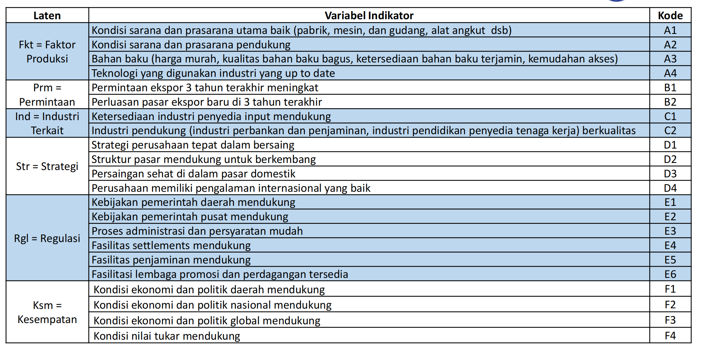

Eksplorasi Data
Import Data . Jangan lupa untuk menginstall package readxl terlebih dahulu karena data yang digunakan adalah file dengan ekstensi .xlsx.
library (readxl)<- read_excel ('data/datasem.xlsx' )head (datasem)
# A tibble: 6 × 45
Perusahaan Provinsi Pulau A1 A2 A3 A4 A5 A6 A7 A8
<dbl> <chr> <chr> <dbl> <dbl> <dbl> <dbl> <dbl> <dbl> <dbl> <dbl>
1 1 Jawa Barat Jawa 4 5 5 4 4 4 5 5
2 2 Jawa Timur Jawa 5 5 5 5 4 5 5 5
3 3 Jawa Timur Jawa 4 4 4 4 4 4 5 5
4 4 Jawa Barat Jawa 4 4 3 4 4 4 4 4
5 5 Jawa Timur Jawa 4 4 4 3 4 4 4 4
6 6 Jawa Timur Jawa 4 4 5 4 4 4 4 4
# ℹ 34 more variables: Atotal <dbl>, B1 <dbl>, B2 <dbl>, Btotal <dbl>,
# C1 <dbl>, C2 <dbl>, Ctotal <dbl>, D1 <dbl>, D2 <dbl>, D3 <dbl>, D4 <dbl>,
# Dtotal <dbl>, E1 <dbl>, E2 <dbl>, E3 <dbl>, E4 <dbl>, E5 <dbl>, E6 <dbl>,
# E7 <dbl>, E8 <dbl>, E9 <dbl>, E10 <dbl>, E11 <dbl>, E12 <dbl>,
# Etotal <dbl>, F1 <dbl>, F2 <dbl>, F3 <dbl>, F4 <dbl>, F5 <dbl>, F6 <dbl>,
# F7 <dbl>, F8 <dbl>, Ftotal <dbl>
tibble [300 × 45] (S3: tbl_df/tbl/data.frame)
$ Perusahaan: num [1:300] 1 2 3 4 5 6 7 8 9 10 ...
$ Provinsi : chr [1:300] "Jawa Barat" "Jawa Timur" "Jawa Timur" "Jawa Barat" ...
$ Pulau : chr [1:300] "Jawa" "Jawa" "Jawa" "Jawa" ...
$ A1 : num [1:300] 4 5 4 4 4 4 4 5 4 5 ...
$ A2 : num [1:300] 5 5 4 4 4 4 4 5 4 5 ...
$ A3 : num [1:300] 5 5 4 3 4 5 4 5 3 5 ...
$ A4 : num [1:300] 4 5 4 4 3 4 4 5 3 5 ...
$ A5 : num [1:300] 4 4 4 4 4 4 4 5 3 5 ...
$ A6 : num [1:300] 4 5 4 4 4 4 4 5 3 4 ...
$ A7 : num [1:300] 5 5 5 4 4 4 4 5 3 5 ...
$ A8 : num [1:300] 5 5 5 4 4 4 4 5 3 4 ...
$ Atotal : num [1:300] 36 39 34 31 31 33 32 40 26 38 ...
$ B1 : num [1:300] 4 4 4 4 3 5 3 3 3 4 ...
$ B2 : num [1:300] 4 4 4 3 4 4 3 3 2 4 ...
$ Btotal : num [1:300] 8 8 8 7 7 9 6 6 5 8 ...
$ C1 : num [1:300] 4 4 4 4 4 4 4 5 3 4 ...
$ C2 : num [1:300] 4 4 4 4 4 4 4 4 3 4 ...
$ Ctotal : num [1:300] 8 8 8 8 8 8 8 9 6 8 ...
$ D1 : num [1:300] 4 5 4 4 4 4 4 4 3 4 ...
$ D2 : num [1:300] 4 5 4 3 4 5 4 4 2 4 ...
$ D3 : num [1:300] 4 5 4 4 4 4 4 4 3 4 ...
$ D4 : num [1:300] 4 5 4 5 4 4 4 4 3 4 ...
$ Dtotal : num [1:300] 16 20 16 16 16 17 16 16 11 16 ...
$ E1 : num [1:300] 5 5 4 4 4 4 4 4 3 5 ...
$ E2 : num [1:300] 5 5 4 4 4 5 4 4 3 5 ...
$ E3 : num [1:300] 5 5 4 4 4 5 4 5 4 5 ...
$ E4 : num [1:300] 4 5 4 3 4 5 4 4 3 4 ...
$ E5 : num [1:300] 4 5 4 4 3 5 4 4 3 4 ...
$ E6 : num [1:300] 4 5 4 4 4 4 4 4 3 4 ...
$ E7 : num [1:300] 4 5 4 4 4 5 4 4 3 4 ...
$ E8 : num [1:300] 4 5 4 4 3 5 4 4 3 4 ...
$ E9 : num [1:300] 4 5 4 4 4 4 4 4 3 4 ...
$ E10 : num [1:300] 4 5 4 4 4 5 4 5 3 4 ...
$ E11 : num [1:300] 4 5 4 3 3 5 4 5 3 4 ...
$ E12 : num [1:300] 5 5 4 4 4 5 4 5 3 5 ...
$ Etotal : num [1:300] 52 60 48 46 45 57 48 52 37 52 ...
$ F1 : num [1:300] 5 5 4 4 4 5 4 4 2 4 ...
$ F2 : num [1:300] 4 5 4 4 4 5 4 4 3 3 ...
$ F3 : num [1:300] 4 5 4 4 4 4 4 4 2 3 ...
$ F4 : num [1:300] 4 5 4 4 4 5 4 5 3 4 ...
$ F5 : num [1:300] 4 5 4 4 3 5 4 4 3 3 ...
$ F6 : num [1:300] 4 5 4 4 3 4 4 5 3 4 ...
$ F7 : num [1:300] 4 5 4 4 3 4 4 4 3 4 ...
$ F8 : num [1:300] 4 5 4 4 4 5 4 4 3 4 ...
$ Ftotal : num [1:300] 33 40 32 32 29 37 32 34 22 29 ...
Dataset ini berisi 6 variabel laten dan 44 indikator. Laten dan indikator yang digunakan dalam model PLS-SEM adalah sebagai berikut:
faktor =~ A1 + A2 + A3 + A4
permintaan =~ B1 + B2
industri =~ C1 + C2
strategi =~ D1 + D2 + D3 + D4
regulasi =~ E1 + E2 + E3 + E4 + E5 + E6
kesempatan =~ F1 + F2 + F3 + F4

Data ini adalah data survey dengan isian likert untuk setiap indikatornya. Pertanyaan utama dalam penelitian ini adalah “Apakah faktor-faktor yang mempengaruhi kesempatan pelaku usaha ekspansi keluar pulau jawa”. Model SEM ini didasarkan pada teori Porter’s Five Forces .
Model 1
install package lavaan dan semPlot untuk analisis SEM. Paket lavaan digunakan untuk analisis SEM, sedangkan paket semPlot digunakan untuk memvisualisasikan model SEM.
install.packages("lavaan") dan install.packages("semPlot").
library (lavaan)library (semPlot)
Membuat Spefisikasi Model .
= " faktor =~ A1 + A2 + A3 + A4 permintaan =~ B1 + B2 industri =~ C1 + C2 strategi =~ D1 + D2 + D3 + D4 regulasi =~ E1 + E2 + E3 + E4 + E5 + E6 kesempatan =~ F1 + F2 + F3 + F4 kesempatan ~ faktor + permintaan + industri + strategi + regulasi"
Keterangan:
Definisi variabel laten (=~)Rumus regresi (~)Rumus (ko)varians (~~)
Estimasi Model .
Untuk estimasi model SEM, kita menggunakan fungsi sem() dari paket lavaan. Fungsi ini akan mengestimasi model sudah kita buat.
= sem (sem.model, data = datasem)
Sebelum melihat hasil output estimasi, kita dapat melihar secara visual model SEM yang telah kita buat dengan menggunakan fungsi semPaths() dari paket semPlot.
Output Model:
Argumen standardized=TRUE untuk menampilkan hasil analisis dengan koefisien standar (standardized coefficients). Dengan koefisien standar, kita dapat membandingkan kekuatan hubungan antar variabel laten. Semakin besar nilai koefisien standar, semakin besar hubungan variabel tersebut terhadap variabel lainnya.
summary (sem.fit, standardized= TRUE )
lavaan 0.6-19 ended normally after 90 iterations
Estimator ML
Optimization method NLMINB
Number of model parameters 59
Number of observations 300
Model Test User Model:
Test statistic 555.757
Degrees of freedom 194
P-value (Chi-square) 0.000
Parameter Estimates:
Standard errors Standard
Information Expected
Information saturated (h1) model Structured
Latent Variables:
Estimate Std.Err z-value P(>|z|) Std.lv Std.all
faktor =~
A1 1.000 0.566 0.706
A2 1.266 0.089 14.271 0.000 0.717 0.872
A3 1.312 0.094 13.991 0.000 0.743 0.854
A4 1.261 0.091 13.913 0.000 0.714 0.849
permintaan =~
B1 1.000 0.725 0.813
B2 1.020 0.063 16.072 0.000 0.739 0.935
industri =~
C1 1.000 0.692 0.893
C2 1.035 0.044 23.446 0.000 0.717 0.911
strategi =~
D1 1.000 0.723 0.922
D2 0.973 0.033 29.472 0.000 0.703 0.941
D3 0.972 0.043 22.590 0.000 0.702 0.855
D4 0.817 0.042 19.325 0.000 0.590 0.797
regulasi =~
E1 1.000 0.736 0.888
E2 0.929 0.039 23.666 0.000 0.684 0.897
E3 0.950 0.043 22.088 0.000 0.699 0.870
E4 1.015 0.039 25.697 0.000 0.747 0.927
E5 0.985 0.042 23.464 0.000 0.725 0.894
E6 0.913 0.045 20.186 0.000 0.673 0.834
kesempatan =~
F1 1.000 0.771 0.900
F2 1.006 0.038 26.712 0.000 0.776 0.933
F3 1.033 0.042 24.672 0.000 0.796 0.905
F4 0.943 0.046 20.414 0.000 0.727 0.833
Regressions:
Estimate Std.Err z-value P(>|z|) Std.lv Std.all
kesempatan ~
faktor 0.016 0.111 0.146 0.884 0.012 0.012
permintaan 0.042 0.059 0.705 0.481 0.039 0.039
industri 0.129 0.133 0.976 0.329 0.116 0.116
strategi 0.131 0.091 1.449 0.147 0.123 0.123
regulasi 0.685 0.077 8.860 0.000 0.654 0.654
Covariances:
Estimate Std.Err z-value P(>|z|) Std.lv Std.all
faktor ~~
permintaan 0.233 0.034 6.785 0.000 0.568 0.568
industri 0.327 0.037 8.729 0.000 0.833 0.833
strategi 0.292 0.035 8.242 0.000 0.715 0.715
regulasi 0.343 0.039 8.730 0.000 0.822 0.822
permintaan ~~
industri 0.366 0.043 8.447 0.000 0.729 0.729
strategi 0.391 0.045 8.713 0.000 0.746 0.746
regulasi 0.332 0.043 7.797 0.000 0.623 0.623
industri ~~
strategi 0.437 0.043 10.274 0.000 0.874 0.874
regulasi 0.416 0.043 9.764 0.000 0.816 0.816
strategi ~~
regulasi 0.405 0.042 9.580 0.000 0.762 0.762
Variances:
Estimate Std.Err z-value P(>|z|) Std.lv Std.all
.A1 0.323 0.029 11.229 0.000 0.323 0.502
.A2 0.161 0.018 8.902 0.000 0.161 0.239
.A3 0.205 0.022 9.430 0.000 0.205 0.271
.A4 0.198 0.021 9.552 0.000 0.198 0.280
.B1 0.269 0.032 8.457 0.000 0.269 0.339
.B2 0.078 0.025 3.161 0.002 0.078 0.126
.C1 0.122 0.014 8.515 0.000 0.122 0.203
.C2 0.106 0.014 7.549 0.000 0.106 0.171
.D1 0.093 0.011 8.749 0.000 0.093 0.151
.D2 0.063 0.008 7.476 0.000 0.063 0.114
.D3 0.182 0.017 10.625 0.000 0.182 0.270
.D4 0.200 0.018 11.219 0.000 0.200 0.365
.E1 0.145 0.014 10.563 0.000 0.145 0.211
.E2 0.114 0.011 10.395 0.000 0.114 0.195
.E3 0.156 0.014 10.845 0.000 0.156 0.242
.E4 0.091 0.010 9.488 0.000 0.091 0.141
.E5 0.133 0.013 10.462 0.000 0.133 0.201
.E6 0.198 0.018 11.224 0.000 0.198 0.304
.F1 0.139 0.014 9.697 0.000 0.139 0.190
.F2 0.090 0.011 8.221 0.000 0.090 0.130
.F3 0.140 0.015 9.540 0.000 0.140 0.181
.F4 0.233 0.021 10.912 0.000 0.233 0.306
faktor 0.321 0.047 6.841 0.000 1.000 1.000
permintaan 0.525 0.065 8.048 0.000 1.000 1.000
industri 0.480 0.049 9.751 0.000 1.000 1.000
strategi 0.522 0.050 10.406 0.000 1.000 1.000
regulasi 0.542 0.055 9.811 0.000 1.000 1.000
.kesempatan 0.122 0.015 8.068 0.000 0.206 0.206
Memperoleh GOF (Goodness of Fit) model SEM.
npar fmin chisq
59.000 0.926 555.757
df pvalue baseline.chisq
194.000 0.000 7355.210
baseline.df baseline.pvalue cfi
231.000 0.000 0.949
tli nnfi rfi
0.940 0.940 0.910
nfi pnfi ifi
0.924 0.776 0.949
rni logl unrestricted.logl
0.949 -4608.159 -4330.280
aic bic ntotal
9334.318 9552.841 300.000
bic2 rmsea rmsea.ci.lower
9365.728 0.079 0.071
rmsea.ci.upper rmsea.ci.level rmsea.pvalue
0.087 0.900 0.000
rmsea.close.h0 rmsea.notclose.pvalue rmsea.notclose.h0
0.050 0.410 0.080
rmr rmr_nomean srmr
0.024 0.024 0.035
srmr_bentler srmr_bentler_nomean crmr
0.035 0.035 0.037
crmr_nomean srmr_mplus srmr_mplus_nomean
0.037 0.035 0.035
cn_05 cn_01 gfi
123.804 132.033 0.854
agfi pgfi mfi
0.810 0.655 0.547
ecvi
2.246
Contoh trashold fit measures yang diterima:
Atau kita bisa mengeluarkan fit measures tertentu saja, misalnya:
fitMeasures (sem.fit)[c (3 ,5 ,9 , 10 , 23 , 42 ,43 )]
chisq pvalue cfi tli rmsea gfi
555.75679415 0.00000000 0.94922149 0.93953692 0.07884004 0.85421245
agfi
0.80987500
Visualisi dengan koefisien.
semPaths (sem.fit, "std" , color = list (lat = "green" , man = "yellow" ), edge.color= "black" , fade= FALSE )
semPaths (sem.fit, "std" , color = list (lat = "green" , man = "yellow" ), edge.color= "black" , fade= FALSE , residuals= FALSE , exoCov= FALSE )
Model 2
= " faktor =~ A1 + A2 + A3 + A4 permintaan =~ B1 + B2 industri =~ C1 + C2 strategi =~ D1 + D2 + D3 + D4 regulasi =~ E1 + E2 + E3 + E4 + E5 + E6 kesempatan =~ F1 + F2 + F3 + F4 kesempatan ~ faktor + permintaan + industri + strategi + regulasi A1 ~~ A2 "
= sem (sem.model2, data = datasem)
Terdapat perbaikan fit measures pada model.
fitMeasures (sem.fit2)[c (3 ,5 ,9 , 10 , 23 , 42 ,43 )]
chisq pvalue cfi tli rmsea gfi
540.53457660 0.00000000 0.95121781 0.94161302 0.07747467 0.85881528
agfi
0.81492365
Output
summary (sem.fit2, standardized= TRUE )
lavaan 0.6-19 ended normally after 96 iterations
Estimator ML
Optimization method NLMINB
Number of model parameters 60
Number of observations 300
Model Test User Model:
Test statistic 540.535
Degrees of freedom 193
P-value (Chi-square) 0.000
Parameter Estimates:
Standard errors Standard
Information Expected
Information saturated (h1) model Structured
Latent Variables:
Estimate Std.Err z-value P(>|z|) Std.lv Std.all
faktor =~
A1 1.000 0.539 0.672
A2 1.303 0.088 14.787 0.000 0.702 0.854
A3 1.396 0.108 12.968 0.000 0.752 0.864
A4 1.336 0.104 12.866 0.000 0.720 0.855
permintaan =~
B1 1.000 0.724 0.813
B2 1.020 0.064 16.062 0.000 0.739 0.935
industri =~
C1 1.000 0.692 0.892
C2 1.037 0.044 23.452 0.000 0.717 0.912
strategi =~
D1 1.000 0.723 0.922
D2 0.973 0.033 29.468 0.000 0.703 0.941
D3 0.972 0.043 22.593 0.000 0.702 0.855
D4 0.817 0.042 19.327 0.000 0.590 0.797
regulasi =~
E1 1.000 0.736 0.888
E2 0.929 0.039 23.657 0.000 0.684 0.897
E3 0.950 0.043 22.072 0.000 0.699 0.870
E4 1.015 0.040 25.673 0.000 0.747 0.927
E5 0.986 0.042 23.462 0.000 0.726 0.894
E6 0.914 0.045 20.189 0.000 0.673 0.834
kesempatan =~
F1 1.000 0.771 0.900
F2 1.007 0.038 26.706 0.000 0.776 0.933
F3 1.033 0.042 24.671 0.000 0.796 0.905
F4 0.943 0.046 20.411 0.000 0.727 0.833
Regressions:
Estimate Std.Err z-value P(>|z|) Std.lv Std.all
kesempatan ~
faktor 0.020 0.121 0.167 0.867 0.014 0.014
permintaan 0.042 0.059 0.709 0.478 0.039 0.039
industri 0.128 0.135 0.950 0.342 0.115 0.115
strategi 0.132 0.091 1.443 0.149 0.123 0.123
regulasi 0.684 0.078 8.811 0.000 0.654 0.654
Covariances:
Estimate Std.Err z-value P(>|z|) Std.lv Std.all
.A1 ~~
.A2 0.068 0.019 3.588 0.000 0.068 0.269
faktor ~~
permintaan 0.224 0.034 6.676 0.000 0.573 0.573
industri 0.312 0.037 8.463 0.000 0.837 0.837
strategi 0.279 0.035 8.005 0.000 0.716 0.716
regulasi 0.327 0.039 8.456 0.000 0.824 0.824
permintaan ~~
industri 0.365 0.043 8.440 0.000 0.729 0.729
strategi 0.391 0.045 8.711 0.000 0.746 0.746
regulasi 0.332 0.043 7.796 0.000 0.623 0.623
industri ~~
strategi 0.437 0.043 10.268 0.000 0.874 0.874
regulasi 0.415 0.043 9.757 0.000 0.816 0.816
strategi ~~
regulasi 0.405 0.042 9.579 0.000 0.762 0.762
Variances:
Estimate Std.Err z-value P(>|z|) Std.lv Std.all
.A1 0.353 0.032 11.133 0.000 0.353 0.549
.A2 0.182 0.020 9.132 0.000 0.182 0.270
.A3 0.192 0.022 8.905 0.000 0.192 0.253
.A4 0.190 0.021 9.171 0.000 0.190 0.268
.B1 0.270 0.032 8.454 0.000 0.270 0.339
.B2 0.078 0.025 3.155 0.002 0.078 0.125
.C1 0.123 0.014 8.573 0.000 0.123 0.205
.C2 0.104 0.014 7.494 0.000 0.104 0.169
.D1 0.093 0.011 8.748 0.000 0.093 0.151
.D2 0.063 0.008 7.481 0.000 0.063 0.114
.D3 0.182 0.017 10.624 0.000 0.182 0.270
.D4 0.200 0.018 11.218 0.000 0.200 0.365
.E1 0.145 0.014 10.565 0.000 0.145 0.211
.E2 0.114 0.011 10.392 0.000 0.114 0.195
.E3 0.157 0.014 10.844 0.000 0.157 0.242
.E4 0.092 0.010 9.490 0.000 0.092 0.141
.E5 0.132 0.013 10.456 0.000 0.132 0.201
.E6 0.197 0.018 11.222 0.000 0.197 0.304
.F1 0.140 0.014 9.700 0.000 0.140 0.190
.F2 0.090 0.011 8.219 0.000 0.090 0.130
.F3 0.140 0.015 9.538 0.000 0.140 0.181
.F4 0.233 0.021 10.912 0.000 0.233 0.306
faktor 0.290 0.046 6.330 0.000 1.000 1.000
permintaan 0.525 0.065 8.046 0.000 1.000 1.000
industri 0.478 0.049 9.734 0.000 1.000 1.000
strategi 0.522 0.050 10.406 0.000 1.000 1.000
regulasi 0.542 0.055 9.808 0.000 1.000 1.000
.kesempatan 0.122 0.015 8.068 0.000 0.206 0.206